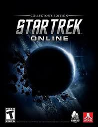

Juegos de moviles
- Star Trek ® - Ira de las gemas
- Star Trek Líneas temporales
- Star Trek Trexels II
- Star Trek Comandante de la flota
Maquinas recreativas
- Pinball de Star Trek de 1979
Videojuegos
Star Trek Academia de la flota espacial
Star Trek 25º Aniversario

Star Trek DAC

Star Trek En línea
Star Trek Creador de naves espaciales

Star Trek: Simulador de Operaciones Estratégicas

Star Trek: Conquista